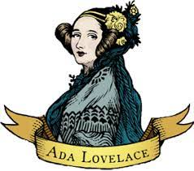
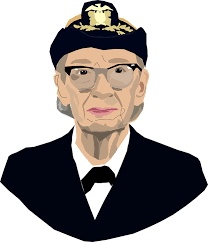
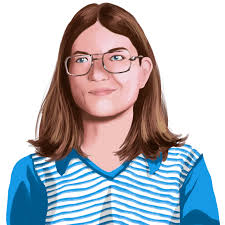
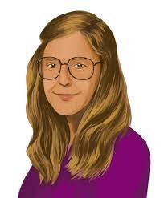
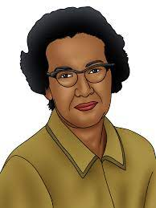

Ada Lovelance
Augusta Ada Byron King, Condessa de Lovelace, atualmente conhecida como Ada Lovelace, foi uma matemática e escritora inglesa. Hoje é reconhecida principalmente por ter escrito o primeiro algoritmo para ser processado por uma máquina, a máquina analítica de Charles Babbage.Por esse trabalho é considerada a primeira programadora de toda a história.

Grace Hooper
Grace Murray Hopper foi almirante e analista de sistemas da Marinha dos Estados Unidos nas décadas de 1940 e 1950, criadora da linguagem de programação de alto nível Flow-Matic (em desuso) — base para a criação do COBOL — e uma das primeiras programadoras do computador Harvard Mark I em 1944.

Carol Shaw
A Carol Shaw foi a primeira mulher a desbravar o universo dos games, na década de 70. Quando trabalhava na Atari, ela lançou comercialmente o primeiro jogo criado por uma mulher, o 3-D Tic-Tac-Toe, que tinha como base o tradicional jogo da velha.A história de Shaw é até hoje uma inspiração para a participação de mulheres na indústria dos videogames.

Margaret Hamilton
Margaret Heafield Hamilton é uma cientista da computação, engenheira de software e empresária estadunidense. Foi diretora da Divisão de Software no Laboratório de Instrumentação do MIT, que desenvolveu o programa de voo usado no projeto Apollo 11, a primeira missão tripulada à Lua. O software de Hamilton impediu que o pouso na Lua fosse abortado.
